Versuchen d. Werte einzusetzen $\underrightarrow{\ \ \ \ \textcolor{#7abd2d}{\text{wenn } \frac{0}{0}}\ \ \ \ }$ d. 3 Fälle
2) Achsen
1) Fall: Achsen:
Wir setzen quazi $x=0/y=0$ & setzen dann den $y,x$-Wert des $\lim$ ein
$y=0, x \to \dots$
$x=0, y \to \dots$
2) Fall: Ursprungsgeraden:
D. ist keine fertige Lösung, d. zeigt nur, dass wir kein Grenzwert haben. D.h., wenn hier alle Ergebnisse gleich sind, dann muss ich dennoch die anderen Beweise rechnen (Sandwitch-Lemma, Polarkoordinaten)
$y = mx \ \lor x = my$
3) Fall: Kurven:
wenn Zähler Pot./Nenner Pot. sehr unterschliedl.
$y = x^2 \ \lor x = y^2$
2) Abschätzen
Polarkoordinaten
nur f. ($\mathbf{\lim \to 0,0}$)
Wir ersetzten $x$ & $y$
$x = r \cdot \cos(\varphi)$
$y = r \cdot \sin(\varphi)$
d. bedeutet einf. nur, dass $r \to 0$, wobei $\varphi$ variabel bleibt
Nutzen: $\cos^2(\varphi) + \sin^2(\varphi) = 1$
WICHTIG !!! D. Ergebnis am Ende darf $\color{red}\lnot$ mehr vom Winkel abhängen
Sandwich-Lemma
$|\sin(\dots)| \leq 1$ & $|\cos(\dots)| \leq 1$.
Nenner verkleinern macht den Bruch größer: Da $x^2 \geq 0$ ist, gilt z.B. $x^2 + y^2 \geq y^2$.
Teilbrüche sind kleiner oder gleich $1$: $\frac{x^2}{x^2+y^2} \leq 1$.
Übung 8
Nr. 3a)
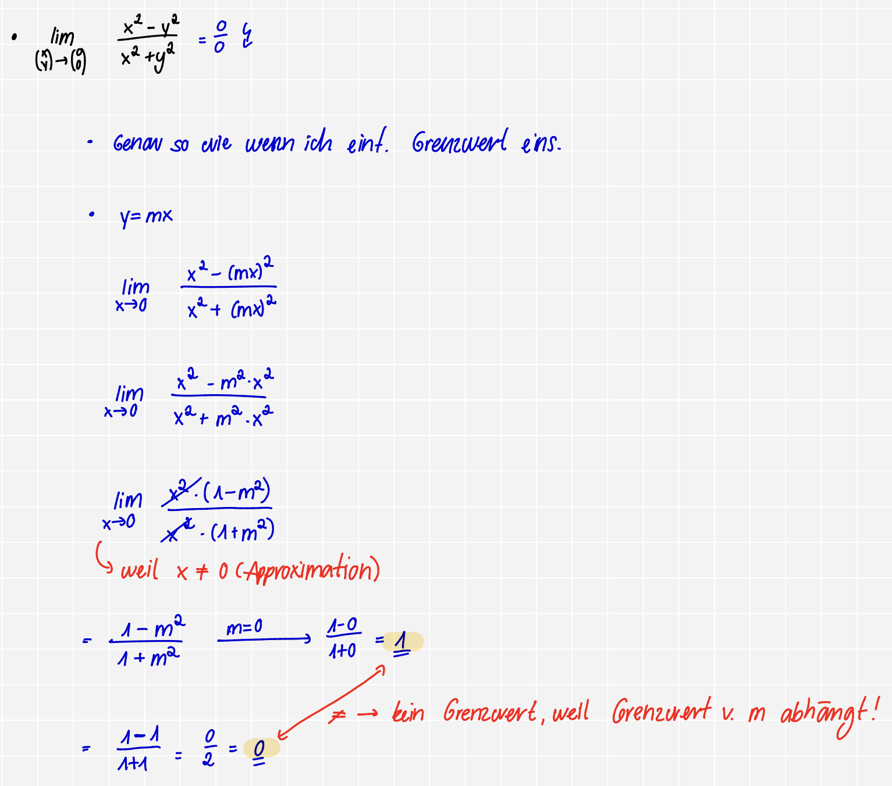
Nr. 3b)
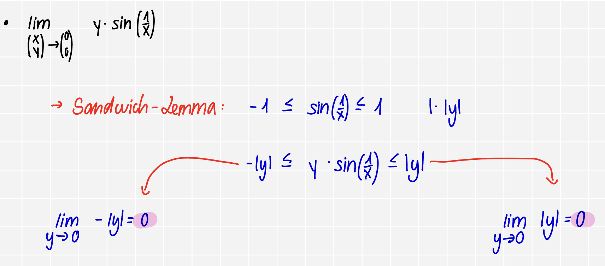
Nr. 3c)
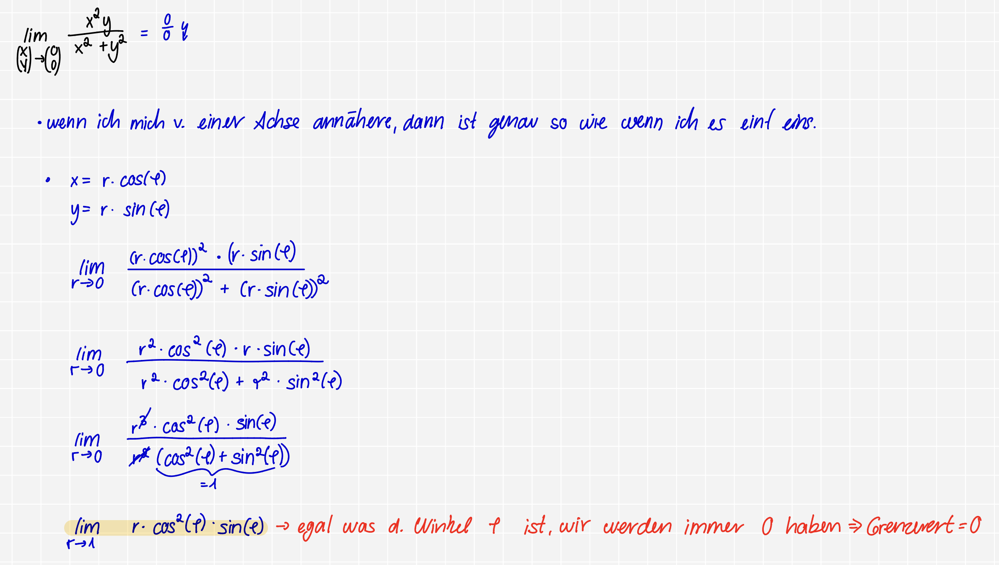
Nr. 3d)
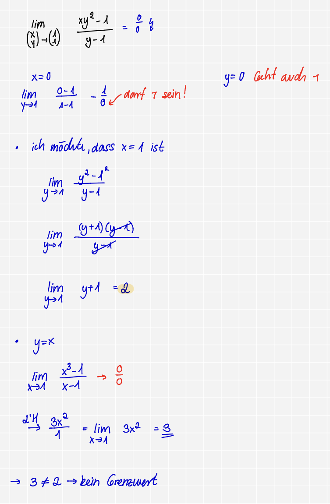
Unstelligkeitswerte finden bei mehreren Veränderlichen:
Wir haben eine Schnittstelle & wir müssen den $\lim$ einfach dort hinschichen
Wann weiß ich, dass es direkt unstetig ist ?>
Wenn eine Konstate steht
Übung 8
Nr. 4a)
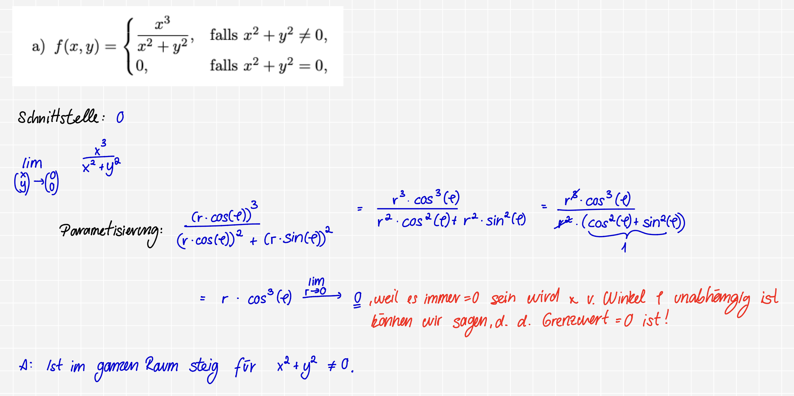
Nr. 4b)
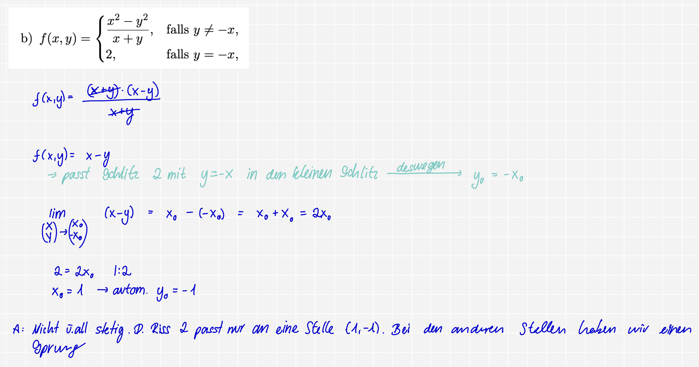
Nr. 4c)
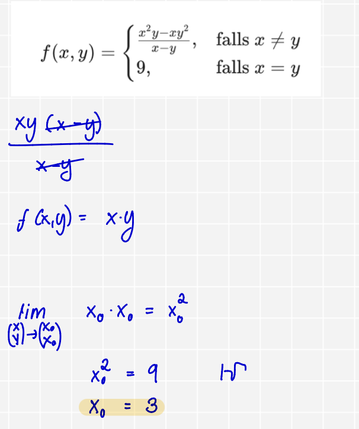
Mein Ergebnis x_0 = $\pm$ 3. Deswegen ist es nicht stetig, weil nur hier bei (3,3), (-3,-3) das ausgeschnitte Stück 9 reinpasst & bei den anderen nicht !
Nr. 4d)
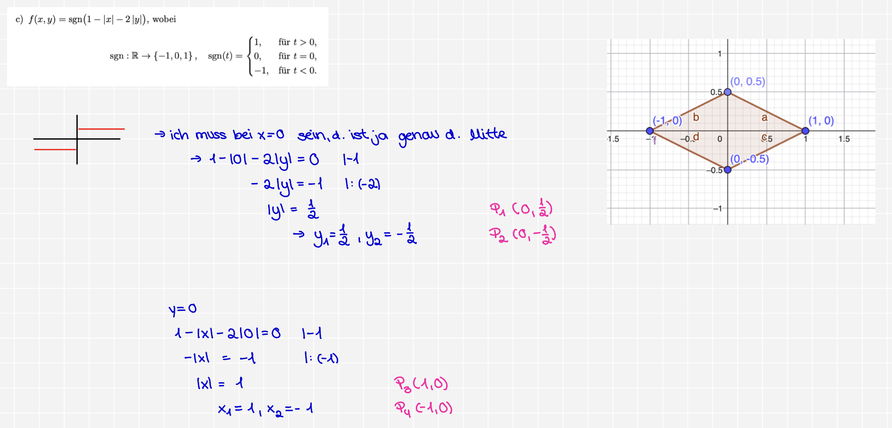
Bestimmung der Höhenlinien & Definitionsbereich
Was ist eine Höhenlinie?:
Funktion mit mehreren Var. ($f(x,y)$)
$\forall$ Werte haben d. gleiche Höhe: $f(x,y)= c$
Übung 8
Nr. 5a)
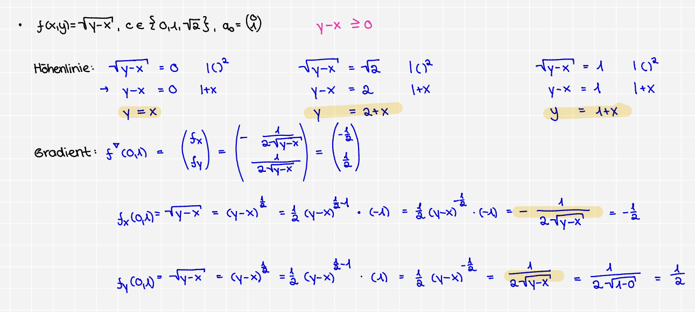
Nr. 5b)
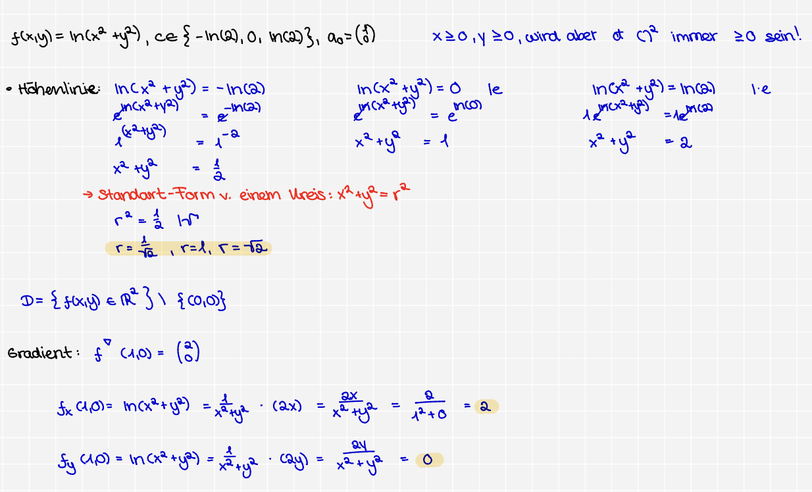
Nr. 5b)
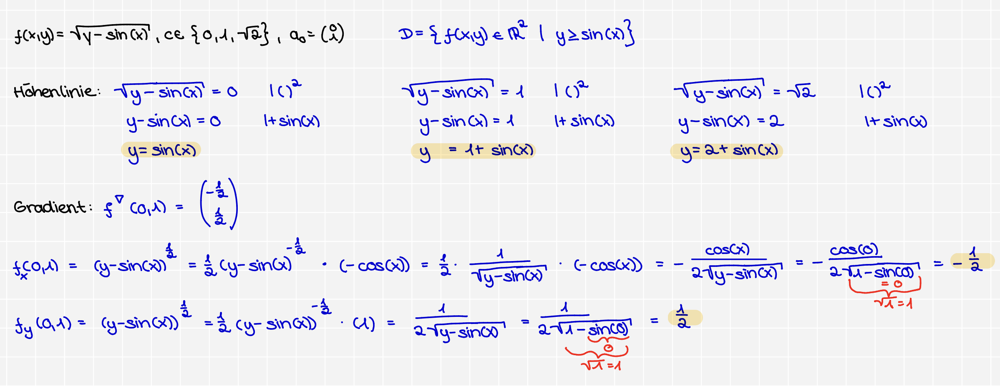
Die Norm
$||x||_{\infty} = max(|x_1|, |x_2|, \dots)$
1. Positive Definitheit:
Eine Länge kann $\lnot \lt 0$
2. Homogenität:
wenn ich eine Pfeil doppolt so lange ziehe ($\lambda = 2$), dann ist d. Länge v. meinem Pfeil auch 2 $\times$ so lang. Auch wenn ich d. in d. andere Seite ziehe, wie ($\lambda = -3$), dann ist sie immer noch $3 \times$ so lang, also $|\lambda|$
3. Dreiecksungleichung:
wenn ich v. $\overset{\to}{AB}$, dann $\nu(x+y)$
Wo ist dies Regel f. mich relevant ?:
Sandwich-Lemma: D. Dreieckungleichung hilft und die beiden Grenzen zu bestimmen !
*Wenn man n. unten abschätzen müssen oder voneinander abziehen müssen: $|\overset{\text{direkte Weg}}{\nu(x) - \nu(y)}| \le \overset{\text{mit Umweg}}{\nu(x - y)}$
NORME SIND IMMER STETIG
wenn ich einmal bewiesen habe, dass etw. eine Norm ist, dann brauche ich kein $\epsilon$-$\delta$-Beweise oder Limes-Rechnungen